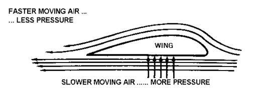

Welcome to this Webpage
This page will inform you on the aerodynamic design of airplanes and how they fly
The design of a remote control plane is the most important aspect of the aircraft. Remote control planes largely resemble larger aircraft with some designed as scale models. They fly using the same physics which will be briefly described below.
There are 4 forces that act on aircraft. They are thrust (forwards), drag (backwards), lift (upwards), and weight (downwards). Thrust is achieved by the motors, drag is the air resistance acting on the plane, weight is the weight of the plane pulling it down to earth. Lift is where it gets more complicated. There are different ways to generate lift, but it is pretty much creating upwards thrust through the means of wings, rockets, or large turboprops. Naturally remote control planes use wings. The diagram shows the design of a wing and how it generates upwards thrust.
Made by Luke Finlayson and Jeff Lester
Copyright and Licensing
Important Information concerning Copyrighting
There are many images used on this website that have been carefully selected from the internet. We have been careful not to use any images that are not licensed for reuse with modification. If there are any image that are not licensed for reuse then please report what image it is and what page its on to the email "l.finlayson@stpauls.school.nz".
To close this window please click anywhere
Important Information concerning Copyrighting
There are many images used on this website that have been carefully selected from the internet. We have been careful not to use any images that are not licensed for reuse with modification. If there are any image that are not licensed for reuse then please report what image it is and what page its on to the email "l.finlayson@stpauls.school.nz".
To close this window please click anywhere